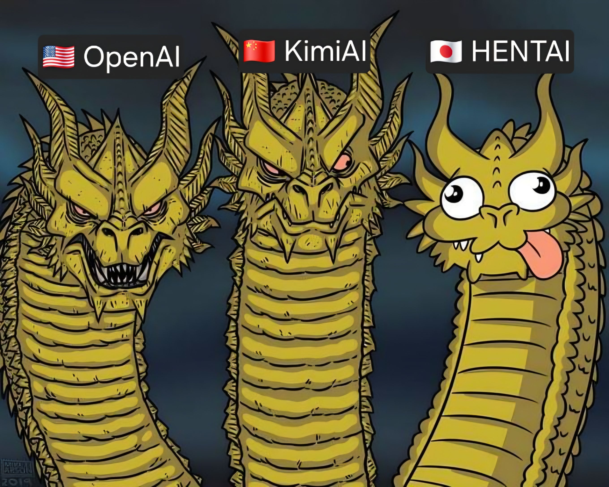

48 · 11 · 8 시간 전 · 원문

x.com/AiPinfu2003/2107031849172418730
수집 당시 댓글 11개
함부르크훠궈복싱장 · 10 시간 전
헨트AI ㄷㄷ
년전개그 · 10 시간 전
오 가능
장래희망백수 · 10 시간 전
일본승. 일본승이요
해병짜장 · 9 시간 전
일본짱..
품절남 · 8 시간 전
KIMI저거 클로드아님?
↳ 답글 · Vv연옥의사신vV · 6 시간 전
KIMI 자체도 성능 나쁘진않음
미션이곧감평 · 8 시간 전
저 뒤에 배경이 젬황 콧구멍임
익사한넙치 · 8 시간 전
나는 헨트AI 매일 씀
탈주유배자 · 4 시간 전
칼레 울라텍 울라텍 반 칼레
주류박람회 · 3 시간 전
가장 위험한건 오른쪽임
따라라란따라란딴쿵짝짝 · 1 시간 전
헨타이?
헨트AI ㄷㄷ